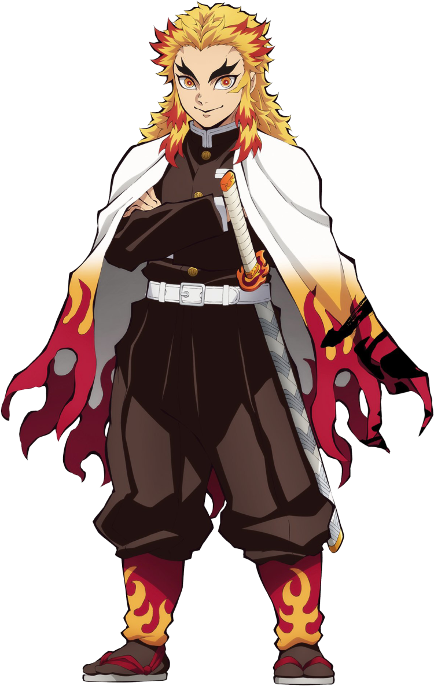

Go Back
Kyojuro Rengoku
Breathing style: FLAME BREATHING
Kyojuro Rengoku was a major supporting character of Demon Slayer: Kimetsu no Yaiba and a major character in the Mugen Train Arc. He was a Demon Slayer of the Demon Slayer Corps and the late Flame Hashira.